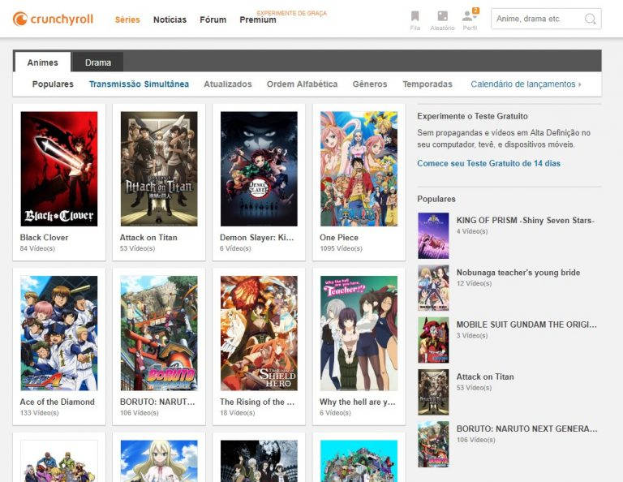

Streaming
O que é streaming?
O streaming é a tecnologia de transmissão de dados pela internet, principalmente aúdio e vídeo, sem a necessidade de baixar o conteúdo. O arquivo, que pode ser um vídeo ou uma música, é acessado pelo usuário online. O detentor do conteúdo transmite a música ou filme pela internet e esse material não ocupa espaço no computador ou no celular. Algumas plataformas oferecem o download de faixas, apenas para assinantes
Quais os benefícios do streaming?
Um dos principais benefícios do streaming é a comodidade: através de uma conta (que pode ser gratuita ou paga, depende da plataforma), você tem acesso a um acervo de filmes, séries, músicas e outros conteúdos, que seriam mais difíceis de acessar legalmente de forma individual, dados os custos de cada mídia física separadamente como CDs e DVDs. Pelo mesmo movito, é uma ferramenta anti-pirataria, que joga com a carta da facilidade de uso e preços acessíveis, contra a distribuição ilegal online.
Por outro lado, a “balcanização” do streaming, com cada estúdio e empresa lançando seu serviço próprio, contribuiu para o aumento recente da pirataria. Já que assinar muitas plataformas diferentes pode sair tão caro quanto uma TV por assinatura.
Quais cuidados devem ser tomados com o streaming?
Basicamente, o usuário deve tomar cuidado com o consumo de dados em smartphones e tablets ao assistir conteúdos em streaming, principalmente quando usar as redes móveis. Dependendo de cada situação, transmissões de vídeos e músicas costumam consumir muitos GBs. E, se o usuário não tomar cuidado, pode estourar o limite da operadora. Alguns serviços, como Netflix, Amazon Prime Video, Globoplay e o Spotify, permitem baixar alguns conteúdos para assistir/ouvir offline, o que protege a franquia de dados.
Quais plataformas de streaming existem?
Existem inúmeras plataformas de streaming, para diversos perfis de usuário e com conteúdos diversos. Listamos aqui alguns dos principais com versão grátis ou pagas.
Netflix
Um dos serviços pioneiros, a Netflix é um serviço pago (oferece apenas um mês de teste grátis) e possui um amplo catálogo de filmes, séries, animações e documentários de diversos estúdios. Foi um dos primeiros a produzir atrações próprias e exclusivas. Está disponível em praticamente todo o mundo (190 países), roda em computadores, smartphones, tablets, TVs, dongles, set-top boxes e consoles de videogame, e transmite vídeos em até 4K, HDR10 e som Dolby Atmos, dependendo do pacote de assinatura.
Amazon Prime Video
O Prime Video é o serviço da Amazon, também disponível para uma grande lista de dispositivos. Conta com uma lista de produções próprias de grande sucesso e parcerias com estúdios que não distribuem para a Netflix. Além disso, o Prime Video possui um preço único de assinatura, sem abordar qualidade de transmissão ou quantidade de telas.
Twitch
Quando o assunto é streaming de games, a Twitch é a plataforma mais popular. Ela permite que os jogadores transmitam vídeos de suas partidas, e os usuários podem assistir gratuitamente. No entanto, o plano de assinatura Twitch Prime, que é atrelado ao da Amazon Prime Video, oferece algumas vantagens, como jogos e DLCs, alguns exclusivos. Está disponível em computadores, smartphones, tablets e consoles.
Crunchyroll
O Crunchyroll é um serviço de nicho, pois é focado em animes, as animações japonesas. Possui uma modalidade gratuita com exibição de anúncios, mas algumas de suas atrações só estão disponíveis no plano de assinatura. O pacote também oferece acesso a diversos mangás, os quadrinhos japoneses, através de um app acessório. Está disponível online, para computadores, smartphones, tablets e outros dispositivos.
